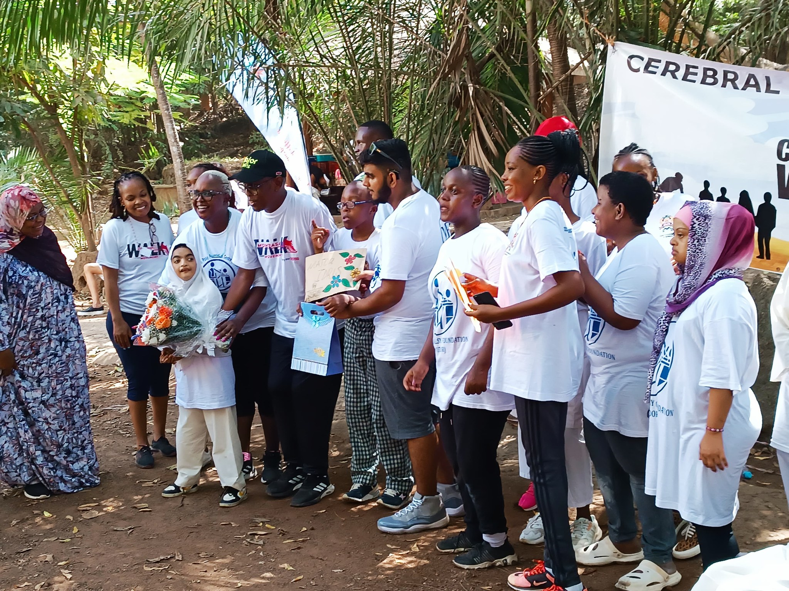

.jpg)
As a student at the Cerebral Palsy Foundation (CPF), I recently had the honour of participating in the CPF 2024 Walk, an event that left an indelible mark on me and countless others. Set within the picturesque Butterfly Pavilion in Mombasa, this gathering was not merely a fundraiser; it was a celebration of unity, talent, and the limitless potential inherent in every individual, regardless of ability.

The CPF 2024 Walk epitomised the ethos of community that defines our school. Students, teachers, parents, and supporters converged, bound together by a shared mission: to champion inclusivity and offer unwavering support to individuals with disabilities. As we meandered along the pavilion's winding pathways, enveloped by the tranquillity of nature, I felt a swell of pride at being part of such a vibrant and diverse collective.
Yet, it was the performances that truly stole the spotlight and resonated deeply with all in attendance. Witnessing my fellow students take centre stage, exuding confidence and grace as they showcased their talents, filled me with profound admiration. From soul-stirring musical renditions to exuberant dance routines, each act served as a testament to the resolute spirit and unyielding determination of CPF students.

However, the evening's magic extended beyond our school community, as local artists and musicians added their voices and talents to the mix. Their participation underscored the significance of collaboration and solidarity in fostering a more inclusive society. Together, we celebrated diversity in its myriad forms, dismantling barriers and nurturing a sense of belonging for all.
As the event drew to a close, I found myself reflecting on its profound impact. The CPF 2024 Walk was more than a mere fundraising endeavour; it was a powerful declaration of acceptance, understanding, and compassion. In a world often marred by division and discord, events like these serve as beacons of hope, reminding us of the transformative power of unity and empathy.

In conclusion, the CPF 2024 Walk stands as a testament to the resilience and spirit of CPF students and our broader community. As we continue our collective journey toward a more inclusive society, let us carry the lessons learned and the memories forged during this event in our hearts. May they serve as catalysts for positive change, inspiring us to champion diversity and embrace inclusivity at every turn.